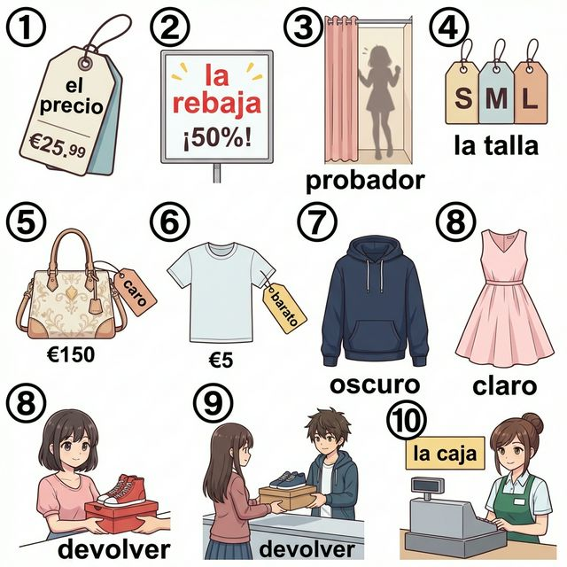
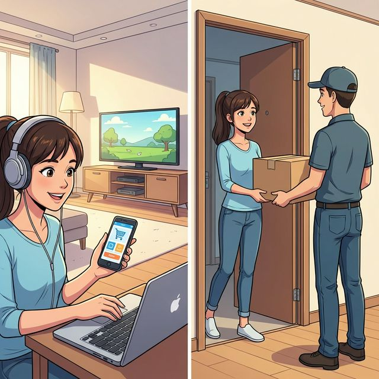

Cervantes: §12 쇼핑, 상점 및 시설 심화: 의류, 색상, 가격 및 실전 구매 시나리오
Consumo inteligente (현명한 소비)
A2 단계에서의 쇼핑은 단순히 물건을 사는 행위를 넘어, 자신의 스타일을 정의하고 가치를 비교하며 문제를 해결하는 과정입니다. 마음에 드는 옷의 정확한 색상을 표현하고, 가격을 협상하거나, 온라인 쇼핑 중 발생한 문제를 해결할 수 있을까요? 이번 장에서는 더 풍부한 색채 형용사와 가격 관련 표현, 그리고 현대적인 온라인 쇼핑 어휘를 배웁니다. 또한 형용사의 비교급과 최상급을 통해 물건들을 비교하고 최선의 선택을 하는 법을 익혀봅시다.
학습 목표
- 색상, 원단, 디자인 및 온라인 쇼핑 관련 고급 어휘 15개 이상 습득
- 형용사의 비교급(Comparative)과 최상급(Superlative) 활용법
- '잘 맞다(quedar bien)', '교환하다(cambiar)' 등 실전 쇼핑 동사 심화
- 스페인의 온라인 쇼핑 트렌드와 소비자 권리 이해
여러분의 스타일을 더욱 화려하게 만들어줄 색상과 쇼핑 필수 요소들입니다. 이미지 속 부티크의 풍경과 함께 어휘를 익혀보세요.

| # | Spanish | English Bridge | Korean Tip |
|---|---|---|---|
| 1 | rojo / roja | — | 빨간색 |
| 2 | azul | Azure ✅ (near) | 파란색 |
| 3 | verde | Verdant (greenery) | 초록색 |
| 4 | amarillo / amarilla | — | 노란색 |
| 5 | negro / negra | Negro (Spanish/Latin root) | 검은색 |
| 6 | blanco / blanca | Blank (white space) | 흰색 |
| 7 | la talla | — | 치수 / 사이즈 |
| 8 | el precio | Price ✅ | 가격 |
| 9 | el descuento | Discount ✅ | 할인 |
| 10 | el recibo / el tique | Receipt / Ticket ✅ | 영수증 |
✅ 표시된 단어는 영어와 어원의 뿌리가 같은 'Cognates'입니다.
고급 쇼핑 시나리오에서 자주 사용하는 핵심 패턴입니다.
A. 교환 및 환불 (Cambios y Devoluciones)
- Quiero cambiar este vestido por otra talla. (I want to change this dress for another size. / 이 원피스를 다른 사이즈로 교환하고 싶어요.)
- ¿Es posible devolver el dinero? (Is it possible to return the money? / 환불이 가능한가요?)
- Tengo el recibo aquí. (I have the receipt here. / 여기 영수증이 있어요.)
- Tiene un defecto. (It has a defect. / 결함이 있어요.)
B. 온라인 쇼핑 (Compras en línea)
- He comprado esto por internet. (I bought this online. / 이걸 인터넷으로 샀어요.)
- ¿Cuándo llegará mi pedido? (When will my order arrive? / 제 주문이 언제 도착할까요?)
- Los gastos de envío son gratuitos. (Shipping costs are free. / 배송비가 무료입니다.)
- He olvidado mi contraseña. (I have forgotten my password. / 비밀번호를 잊어버렸어요.)
물건의 가치를 비교하고 최고의 선택을 표현하는 법을 배워봅시다.
두 대상을 비교할 때 사용합니다.
- 우등 비교: más + 형용사 + que (more ... than)
- Esta camisa es más barata que esa. (이 셔츠가 저것보다 더 싸다.)
- 열등 비교: menos + 형용사 + que (less ... than)
- Estos zapatos son menos cómodos. (이 구두는 덜 편하다.)
- 동등 비교: tan + 형용사 + como (as ... as)
- El bolso azul es tan bonito como el negro. (파란 가방은 검은 것만큼 예쁘다.)
여러 대상 중 최고를 나타낼 때 사용합니다. 정관사(el, la, los, las)를 함께 씁니다.
- 정관사 + más/menos + 형용사
- Es el vestido más caro de la tienda. (가게에서 가장 비싼 원피스입니다.)
- 절대 최상급 (-ísimo/a): '매우 ~하다'는 의미를 강조합니다.
- ¡Es buenísimo! (정말 최고예요! / 아주 좋아요!)
스페인의 현대적인 온라인 소비 문화를 알아봅시다.

España se ha adaptado rápidamente a la era digital. Aunque ir de compras por los centros comerciales como El Corte Inglés sigue siendo una tradición familiar, el comercio electrónico o e-commerce ha crecido exponencialmente en los últimos años. Gigantes internacionales y plataformas locales son muy populares entre los jóvenes (la generación Z y los millennials).
La logística en España es muy eficiente, con entregas en 24 horas en la mayoría de las ciudades grandes. Además, los españoles valoran mucho la seguridad en los pagos y la facilidad para devolver los productos. En fechas como el Black Friday, que ya es un evento global, las ventas en línea baten récords. Sin embargo, el contacto personal sigue siendo importante, y muchas marcas usan el modelo "híbrido": comprar en línea y recoger en la tienda física (click & collect).
[한국어 번역]
스페인은 디지털 시대로 빠르게 적응했습니다. 엘 코르테 잉글레스 같은 쇼핑몰에 가는 것이 여전히 가족 전통으로 남아있지만, 전자상거래(e-commerce)는 최근 몇 년간 기하급수적으로 성장했습니다. 국제적인 거대 기업들과 현지 플랫폼들은 젊은 층(Z세대와 밀레니얼 세대) 사이에서 매우 인기가 높습니다.
스페인의 물류는 매우 효율적이어서 대부분의 대도시에서는 24시간 내 배송이 이루어집니다. 또한 스페인 사람들은 결제 보안과 제품 반품의 용이성을 매우 중요하게 생각합니다. 이제는 글로벌 행사가 된 블랙 프라이데이 같은 날에는 온라인 매출이 기록을 경신하곤 합니다. 하지만 여전히 개인적인 접촉을 중요하게 여기기에, 많은 브랜드들이 온라인으로 구매하고 매장에서 수령하는 '하이브리드' 모델(click & collect)을 사용합니다.
A. Choose the correct comparative (알맞은 비교급을 선택하세요)
| Spanish | Comparison |
|---|---|
| 1. El algodón es (..........) que la seda. | a. más caro |
| 2. Esta falda es (..........) que esa. | b. tan bonita |
| 3. El azul es (..........) que el verde para ti. | c. menos caro |
| 4. El precio es (..........) como ayer. | d. mejor |
| 5. Este pedido es (..........) rápido de todos. | e. el más |
B. 형용사 변형 및 최상급 (괄호 안의 형용사를 이용해 문장을 완성하세요)
C. 번역 연습 (비교급과 온라인 쇼핑 표현을 활용하세요)
Mi experiencia con las compras online (나의 온라인 쇼핑 경험)
Hace dos semanas, compré una chaqueta de ante (스웨이드) en una tienda online muy conocida. El diseño era espectacular y el precio era muy competitivo, incluso con los gastos de envío. Sin embargo, cuando llegó el pedido el viernes pasado, la talla era demasiado pequeña para mí. Inmediatamente, entré en la página web para solicitar un cambio. El proceso fue facilísimo. Al día siguiente, un mensajero vino a mi casa para recoger la chaqueta vieja y me entregó una nueva de la talla correcta. ¡El servicio fue excelente! Ahora, la chaqueta me queda perfectamente y el color es incluso más bonito que en las fotos. Recomiendo esta tienda a todos mis amigos.
Questions:
1. 주인공이 주문한 자켓에 어떤 문제가 있었나요? (What was the problem with the jacket?)
- ............................................................
2. 반품/교환 프로세스가 어떠했나요? (How was the return/exchange process?)
- ............................................................
[한국어 번역]
2주 전, 저는 유명한 온라인 상점에서 스웨이드 재킷을 하나 샀습니다. 디자인은 환상적이었고 가격은 배송비를 포함해도 매우 경쟁력이 있었죠. 하지만 지난주 금요일에 주문한 물건이 도착했을 때, 사이즈가 저에게 너무 작았습니다. 즉시 웹사이트에 들어가 교환을 요청했습니다. 과정은 정말 쉬웠어요. 다음 날, 택배 기사가 집으로 와서 기존 재킷을 수거하고 제가 원하는 사이즈의 새 재킷을 전달해주었습니다. 서비스가 정말 훌륭했습니다! 이제 재킷은 저에게 완벽하게 잘 맞고, 색상은 사진보다 훨씬 더 예쁩니다. 제 모든 친구들에게 이 상점을 추천합니다.
¿Me queda bien? (나한테 잘 어울려?)
Situación: Lucía está en una tienda de ropa con su amigo Carlos y se prueba algunas cosas.
상황: 루시아가 친구 카를로스와 옷가게에서 몇 가지 옷을 입어보고 있습니다.
| Spanish | Korean |
|---|---|
| Lucía: Carlos, ¿qué te parece este vestido rojo? | 루시아: 카를로스, 이 빨간 원피스 어때? |
| Carlos: Te queda muy bien, pero creo que el azul es más elegante. | 카를로스: 너한테 정말 잘 어울려, 하지만 파란색이 더 우아한 것 같아. |
| Lucía: ¿Tú crees? Voy a probarme el azul entonces. (...) ¿Y ahora? | 루시아: 그렇게 생각해? 그럼 파란색을 한번 입어볼게. (...) 지금은 어때? |
| Carlos: ¡Increíble! Es el vestido más bonito que te he visto. | 카를로스: 와! 내가 본 네 모습 중에 제일 예쁜 원피스야. |
| Lucía: ¡Gracias! Además, tiene un 30% de descuento. ¡Es baratísimo! | 루시아: 고마워! 게다가 30% 할인 중이야. 정말 싸! |
| Carlos: Pues no te lo pienses más. ¡Lévatelo! | 카를로스: 그럼 더 고민하지 마. 얼른 사! |
| Lucía: Vale. Voy a pagar en la caja. ¿Aceptan tarjeta? | 루시아: 좋아. 계산대에서 계산할게. 카드 받나? |
이번 장의 핵심 내용을 복습해 보세요.
- [ ] 색상 어휘와 옷 관련 고급 단어 10개 이상을 이해하나요?
- [ ] 비교급(más/menos/tan)과 최상급을 상황에 맞게 쓸 수 있나요?
- [ ] 교환, 환불 및 온라인 쇼핑과 관련된 실전 표현을 익혔나요?
- [ ] 스페인의 온/오프라인 쇼핑 트렌드와 특징을 이해했나요?
¡Excelente! 이번 장을 통해 여러분은 스페인어로 자신의 스타일을 선택하고, 가치를 비교하며, 합리적인 소비를 하는 법을 배웠습니다. 형용사의 다양한 변화와 비교 표현들은 여러분의 스페인어를 더욱 풍부하고 논리적으로 만들어줄 것입니다. 쇼핑이라는 일상의 주제가 예술적인 표현으로 승화되는 것을 느끼셨나요? 다음 장에서는 소중한 사람들과 소통하는 '미디어, IT 및 현대 사회의 소통(A2)' 섹션으로 넘어가겠습니다. ¡Disfruta de tu nuevo estilo!
6. Práctica - A. Choose the correct comparative
1-c / 2-d / 3-a / 4-b / 5-e
6. Práctica - B. 형용사 변형 및 최상급
1. buenísimo / 2. más grande / 3. más interesante / 4. caros / 5. muy
6. Práctica - C. 번역 연습
1. Esta camisa es más bonita que esa.
2. ¿Cuál es el bolso (또는 el bolso de mano) más barato?
3. Mi pedido todavía no ha llegado.
4. ¿Cuánto cuestan los gastos de envío?
5. Quiero cambiar esto por otro color.
7. Lectura Questions
1. 사이즈가 너무 작았음 (La talla era demasiado pequeña).
2. 매우 쉽고 효율적이었음 (Facilísimo y eficiente).